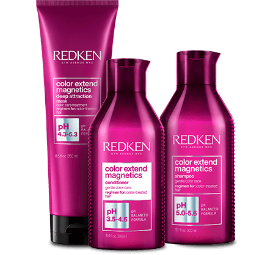

Napędzany nauką
Rekomendowany przez
profesjonalistów
Wiodąca marka profesjonalnych
produktów do włosów
Technologia oparta na najnowszych osiągnięciach nauki oraz tradycji innowacji sięgającej lat 60. XX wieku.
Jest pierwszą marką, która zastosowała naukowe podejście do włosów
i odkryła formułę, która do dziś wyznacza standardy pielęgnacji włosów:
PROTEINY + NAWILŻENIE + KWASOWE pH = ZDROWE WŁOSY
Znajdź gamę odpowiadającą Twoim potrzebom
Acidic Bonding Concentrate
Intensywna regeneracja
Intensywnie regenerująca gama wspiera odbudowę włosa wewnątrz i na zewnątrz. W efekcie są one mniej łamliwe, łatwiejsze w rozczesywaniu i jedwabiście gładkie w dotyku. Odżywiająca formuła chroni dodatkowo kolor przed wypłukiwaniem.
Dowiedz się więcejAll Soft
Nawilżenie
Gama All Soft wzbogacona olejkiem arganowym ułatwia rozczesywanie włosów i zwiększa ich połysk, pozostawiając je nawilżone i wypielęgnowane. Intensywnie odżywiająca formuła nadaje się do każdego rodzaju włosów.
Dowiedz się więcejColor Extend Magnetics
Trwałość koloru
Pielęgnacja Redken Color Extend Magnetics wzbogacona o aminokwasy dedykowana jest do włosów farbowanych. Formuła o kwasowym pH domyka łuski włosowe, zabezpieczając je przed wypłukiwaniem się koloru.
 Dowiedz się więcejExtreme
Intensywna naprawa
Redken Extreme to wyjątkowa gama wzbogacona proteinami, dedykowana do włosów potrzebujących odbudowy. Regenerująca formuła przywraca włosom siłę i zapobiega rozdwajaniu się końcówek.
Dowiedz się więcejVolume Injection
Dodanie objętości
Redken Volume Injection stworzony został z myślą o włosach pozbawionych objętości. Kompleksowa formuła szamponu i odżywki nadaje włosom lekkości, pozostawiając je odżywione i uniesione u nasady, widocznie zwiększając objętość.
Dowiedz się więcejFrizz Dismiss
Wygładzenie
Gama Redken Frizz Dismiss przeznaczona jest do włosów puszących się, które trudno poskromić. Kompleksowe formuły wzbogacone o olejek Babassu, wygładzają niesforne pasma, pozostawiając włosy odżywione i pełne blasku.
Dowiedz się więcejPielęgnacja napędzana nauką również dla mężczyzn:
Brews
Produkty dla mężczyzn
Szeroka gama Redken Brews oferuje kompleksową pielęgnację dla mężczyzn do codziennego stosowania. Szampon pozwala na delikatne oczyszczanie włosów, pomagając utrzymać ich strukturę i dobrą kondycję. Różnorodna oferta produktów do pielęgnacji pozwoli każdemu mężczyźnie zadbać zarówno o włosy i brodę, jak i skórę głowy. W gamie nie zabrakło również produktów do stylizacji, dopełniających codzienną pielęgnację.
Dowiedz się więcejWypróbuj również nasze produkty do stylizacji:
Styling
Stylizacja
Szeroka oferta produktów do stylizacji Redken oferuje innowacyjne formuły, które odpowiadają na różnorodne potrzeby włosów - od utrwalenia i uniesienia po nadanie im wyjątkowej tekstury.
One United
Produkt multifunkcyjny
Odżywka w spray’u, chroni przed wysoką temperaturą, dodaje blasku i miękkości.